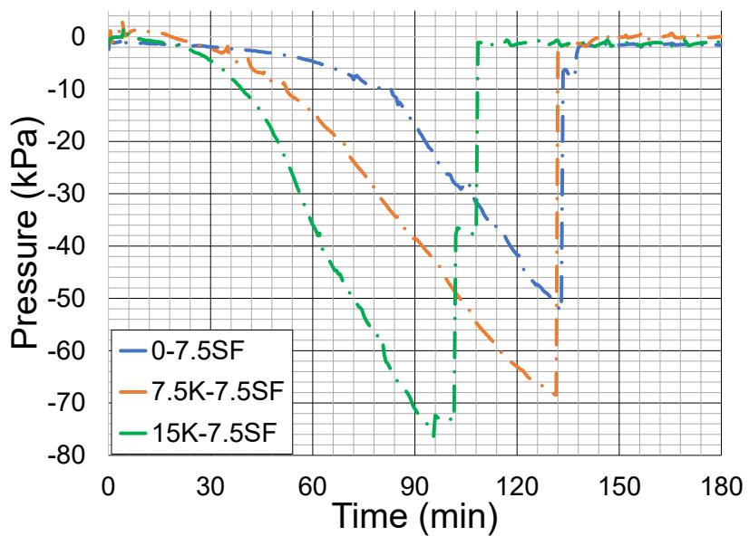
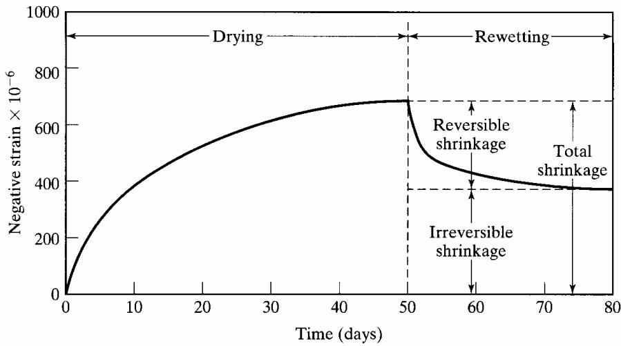
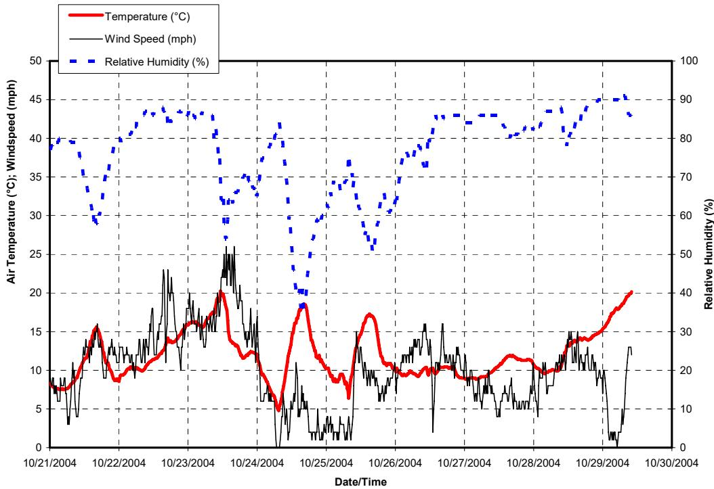
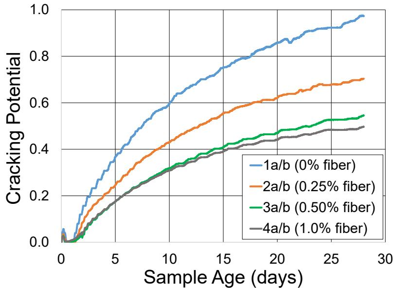
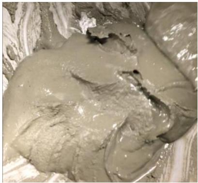

Plastic Shrinkage Cracking
Plastic shrinkage cracking is a specific manifestation of early-age cracking, categorized under the broader mechanisms of Shrinkage & Early-Age Cracking that occurs while concrete remains in a plastic state prior to the development of significant structural strength [2]. This phenomenon takes place between casting and final set, when tensile forces induced by restrained shrinkage can exceed the developing tensile strength of the material [2], driven by rapid and excessive moisture loss from the concrete surface.
Sources (11)
Mechanisms of Plastic Shrinkage
As moisture leaves through bleeding and evaporation, negative capillary pressure develops between aggregates when the evaporation rate exceeds the bleeding rate. The surface tension of capillary water menisci creates attractive forces on adjacent particles, producing overall negative pressure inside the pore system; once air-entry occurs and menisci break, weak points form in the concrete surface that serve as starting locations for cracking . In a restrained concrete element (by reinforcement, formwork, or construction joints), this negative pressure causes tensile stresses as the concrete attempts to contract while restrained, leading to cracking if these stresses exceed the low tensile strength of early-age concrete . While no shrinkage crack will develop if a concrete element shrinks freely and uniformly, tensile stresses will develop if the surface concrete shrinks much more than the interior concrete, causing premature cracking before sufficient strength is gained [1]. Furthermore, when relative humidity within hydrating concrete falls below 80%, cement hydration may cease, which governs the pore structure, permeability, diffusivity, and absorption characteristics of the hardened concrete [1]. The rate of capillary pressure development provides a more reliable indicator of potential plastic shrinkage severity than absolute pressure magnitude, as it reflects the speed at which free water is consumed by hydration and evaporation [2].

Capillary pressure development rates for Specimens 0-7.5SF, 7.5K-7.5SF, and 15K-7.5SF [2]The irreversible nature of early-age shrinkage is attributed to the unstable amorphous structure of calcium-silicate-hydrate (C-S-H), which undergoes bond rearrangement upon moisture loss, leading to permanent deformation even after rewetting [3]. For instance, when concrete slabs are placed during daytime, retained heat from cement hydration creates a positive temperature gradient (warmer top than bottom) that persists after setting; as this gradient dissipates at night, the slab curls upward, contributing to permanent curling and warping [3]. Microcracks at the concrete surface, which can extend from a depth of less than 4 mm to as deep as 28 mm into the pavement, often result from insufficient curing or poor workability such as over-finishing [4]. These cracks are typically shallow because the pores that lose the most water are located near the surface, yet they critically compromise durability by allowing ingress of chlorides that destroy the protective alkaline environment around steel reinforcement [2]. Ultimately, poor curing practices lead to plastic surface cracks that subsequently allow water intrusion, which acts as a primary mechanism for feeding other deterioration processes like freeze-thaw damage [4].

Typical behavior of PCC on drying and wetting [3]Factors Influencing Plastic Shrinkage
The evaporation rate is influenced primarily by air temperature, concrete temperature, wind speed, and relative humidity, with ACI specifying preventive measures if evaporation exceeds a given limit. Bleeding rates depend on w/c ratio, particle gradation, viscosity, and hydration rate; notably, bridge decks experience higher bleeding rates due to thin geometry and are far more susceptible than footings due to high exposed surface area-to-volume ratio. While capillary pressure is a localized phenomenon whose magnitude is not intrinsic to the concrete mix, tensile strain capacity reaches its lowest point around six hours after casting (time of initial setting). An unworkable mix characterized by gap gradations or dry absorptive aggregates can lead to over-finishing and tearing of the surface, contributing directly to microcracking [4]. Furthermore, high concrete placement temperatures exceeding 80°F, particularly during morning hours on hot summer days, are a known trigger for premature transverse cracking [5], and Indiana mandates minimum cement content specifications in its mix designs specifically to reduce the incidence of plastic shrinkage cracking [5]. Seasonal variations in environmental conditions have a greater influence on reversible warping than daily variations because of the low hydraulic conductivity of concrete, which slows moisture movement through the slab depth [3].
 High water-cement ratio and cracking left half of the cold joint [4]
High water-cement ratio and cracking left half of the cold joint [4]
The addition of supplementary cementitious materials as binary, ternary, or more complex mixtures, such as binder modification via Class F fly ash substitution, can alter the setting time and shrinkage characteristics originally optimized by the manufacturer in blended cements [6]. Consequently, laboratory evaluation of concrete mixtures containing supplementary cementitious materials typically measures plastic shrinkage alongside drying shrinkage, bleeding, setting time, and strength gain [6].
Traditional Mitigation and Curing Methods
Among water-adding techniques, ponding or immersion is considered the most effective method for facilitating cement hydration, though it is seldom used due to labor and cost constraints [1]; other traditional wet curing methods include plastic barriers and fogging. Regarding scheduling strategies, nighttime paving is used to minimize permanent curling and warping by preventing the temperature gradient changes that occur when daytime-placed slabs cool after hardening, although this approach may reduce productivity [3]. When nighttime placement is not feasible, morning paving operations serve as a secondary scheduling preference, as they have been observed to produce smoother jointed plain concrete pavements (JPCP) compared to afternoon paving [3].

Platteville pilot site—recorded environmental conditions [3]Internal Curing Techniques
Internal curing, which utilizes porous aggregates, SAPs, or natural pozzolans, can reduce plastic shrinkage cracking by dispersing water throughout the concrete depth; this is particularly effective in low w/cm ratio and high-strength concretes where external water penetration is limited [7]. By replacing approximately 30% of the fine aggregate volume with prewetted LWFA having about 20% absorption, a volume of internal curing water equivalent to the chemical shrinkage of typical cement can be provided to mitigate plastic shrinkage [7]. Consequently, internally cured concrete mixtures are less likely to crack due to plastic shrinkage effects and can allow a greater temperature swing in the concrete before cracking occurs compared to conventional mixes [7]. Furthermore, internal curing using saturated lightweight fine aggregate (LWFA) can maintain early-age internal moisture above 90%, which prevents premature pore drying and reduces the risk of warping and cracking in low w/cm ratio concretes [8]. This method also decreases the modulus of elasticity, leading to reduced stresses under shrinkage strains [8].
 Conventional curing compared to internal curing [7]
Conventional curing compared to internal curing [7]
Beyond shrinkage mitigation, internal curing can reduce damage associated with alkali-silica reaction (ASR) by providing space to accommodate ASR gel and altering pore solution composition [7]. In continuously reinforced concrete pavements (CRCP), the use of internally cured concrete can lead to tighter crack openings and reduced punch-out failures by reducing built-in stress associated with moisture gradients [7]. Additionally, the use of internally cured concrete can allow a reduction in minimum pavement thickness from 8 inches to 7 inches and from 10 inches to 9 inches while still satisfying required performance limits over a 30-year design life [8]. This thickness reduction offsets the typically higher initial construction costs associated with internal curing [8].
 IRI of conventionally cured pavements over design life [8]
IRI of conventionally cured pavements over design life [8]
Shrinkage-Reducing Admixtures (SRAs)
Shrinkage-reducing admixtures (SRAs) mitigate cracking by lowering the surface tension at capillary water menisci, a process which directly reduces the magnitude of shrinkage forces generated during moisture loss [2].
Fiber Reinforcement Strategies
By utilizing fiber reinforcement to produce crack-bridging behavior, paving concrete mixes can create high-performance pavements that are less susceptible to microcracking from shrinkage compared to conventional pavements, which enhances long-term durability [9]. Furthermore, fiber reinforcement mitigates plastic shrinkage by increasing the tensile strength of the matrix and distributing fibers evenly to prevent aggregate settling, thereby reducing water loss during the bleeding process [2].

Cracking potential over time for all FRC mixes [2]Superabsorbent Polymers (SAPs) in Concrete
Superabsorbent polymers (SAPs) function as synthetic internal water reservoirs that can replace surface water lost to evaporation, thereby reducing plastic shrinkage cracking in concrete mixtures [10]. These materials are typically incorporated at dosages of 0.3% to 0.6% of the binder mass and must be specified based on their absorption rates rather than fixed volume percentages [10]. To assist in mix design purposes, the tea bag method is used as a standardized test procedure to determine the free swell capacity of SAP powders in saline or other aqueous solutions [10].
 Effects of SAP on the slump of concrete for (a) SAP-a and (b) SAP-b, where Sa-0 is dry and Sa-10 is pre-absorbed (particle size: SAP-a > SAP-b) [10]
Effects of SAP on the slump of concrete for (a) SAP-a and (b) SAP-b, where Sa-0 is dry and Sa-10 is pre-absorbed (particle size: SAP-a > SAP-b) [10]
Furthermore, the paste volume containing SAP must not exceed 26.5% of the concrete design volume, and a specified maximum water-to-cementitious materials ratio (w/cm) of 0.42 must be maintained during construction [10].
Mitigation in 3D Concrete Printing
In 3D concrete printing, low water-to-binder ratios (typically 0.30–0.40) are required to achieve sufficient buildability and shape-holding ability, but this design choice inherently increases the mixture’s susceptibility to plastic shrinkage cracking [11]. To mitigate plastic shrinkage cracking in 3D printed elements, immediate physical barriers such as plastic covers or sheets must be applied within hours of printing to prevent rapid water evaporation from the exposed filament surfaces [11].

shows the effects of grout and superplasticizer on the printing qualities of the 3D printed concrete objects. (a) G20-SP1.25 [11]Mechanical Performance and Durability
Internally cured concrete typically exhibits a lower coefficient of thermal expansion (CTE) and lower modulus of elasticity compared to conventionally cured concrete, which mitigates the negative effects of increasing joint spacing on distress performance over time [8]. These properties contribute to higher overall pavement performance and decreasing ultimate International Roughness Index (IRI) values [8]. Furthermore, the ratio of flexural strength to compressive strength in 3D printed concrete exceeds 11%, which is significantly higher than the approximately 6% observed in conventional mold-cast samples, indicating that extrusion-induced densification enhances cracking resistance [11]. To further manage structural integrity, SAPs can swell to fill cracks if water penetrates the system, effectively decreasing the permeability of healed cracks up to 100 μm wide [10].
 8 in. thick conventionally and internally cured pavement [8]
8 in. thick conventionally and internally cured pavement [8]
Related Concepts
- Drying Shrinkage
- Autogenous Shrinkage
- Capillary Pressure in Concrete
- Fiber-Reinforced Concrete
- Supplementary Cementitious Materials
- Concrete Curing
- Shrinkage & Early-Age Cracking
References
- K. Wang, J. K. Cable, and G. Zhi, "Improved Pavement Curing Materials and Techniques: Part 1 (Phases I and II)," Center for Transportation Research and Education (CTRE), Iowa State University, Ames, IA, Rep. TR-451, 2002. [Online]. Available: https://www.cptechcenter.org/wp-content/uploads/2018/03/curing.pdf
- B. Shafei, P. Taylor, B. Phares, and M. Kazemian, "Fiber-Reinforced Concrete for Bridge Decks," Bridge Engineering Center, Iowa State University, Ames, IA, Rep. TR-767, 2021. [Online]. Available: https://www.intrans.iastate.edu/wp-content/uploads/2021/12/fiber-reinforced_concrete_in_bridge_decks_w_cvr.pdf
- H. Ceylan, S. Kim, D. J. Turner, R. O. Rasmussen, G. K. Chang, J. Grove, and K. Gopalakrishnan, "Impact of Curling, Warping, and Other Early-Age Behavior on Concrete Pavement Smoothness: EFD Study (Phase II)," Center for Transportation Research and Education, Ames, IA, 2007. [Online]. Available: https://www.intrans.iastate.edu/wp-content/uploads/2018/03/curling_warping-2.pdf
- J. Grove, F. Bektas, and H. Gieselman, "Southeast Michigan Local Road Concrete Pavement Durability Study," National Concrete Pavement Technology Center, Ames, IA, 2006. [Online]. Available: https://www.cptechcenter.org/wp-content/uploads/2018/03/mi_pavement_durability.pdf
- J. Grove, G. Fick, T. Rupnow, and F. Bektas, "Material and Construction Optimization for Prevention of Premature Pavement Distress in PCC Pavements," National Concrete Pavement Technology Center, Ames, IA, Rep. TPF-5(066), 2008. [Online]. Available: https://www.intrans.iastate.edu/wp-content/uploads/2018/03/mco-final.pdf
- S. Schlorholtz, "Development of Performance Properties of Ternary Mixes: Scoping Study (Phase 1)," Center for Portland Cement Concrete Pavement Technology, Iowa State University, Ames, IA, Rep. DTFH61-01-X-00042 (Project 13), 2004. [Online]. Available: https://www.cptechcenter.org/wp-content/uploads/2018/03/ternary_mixes.pdf
- W. J. Weiss and L. Montanari, "Guide Specification for Internally Curing Concrete," National Concrete Pavement Technology Center, Ames, IA, Rep. TPF-5(286), 2017. [Online]. Available: https://www.intrans.iastate.edu/wp-content/uploads/2018/09/IC_guide_spec_w_cvr.pdf
- P. Vosoughi, S. Tritsch, H. Ceylan, and P. Taylor, "Lifecycle Cost Analysis of Internally Cured Jointed Plain Concrete Pavement," National Concrete Pavement Technology Center, Ames, IA, Rep. TR-676, 2017. [Online]. Available: https://publications.iowa.gov/27038/
- D. Harrington, R. Rasmussen, D. Merritt, T. Cackler, and P. Taylor, "Long-Term Plan for Concrete Pavement Research and Technology—The Concrete Pavement Road Map (Second Generation): Volume II, Tracks (FHWA-HRT-11-070)," National Center for Concrete Pavement Technology, Iowa State University, Ames, IA, 2012. [Online]. Available: https://www.fhwa.dot.gov/publications/research/infrastructure/pavements/pccp/11070/11070.pdf
- B. Zhou, P. Taylor, and K. Wang, "Superabsorbent Polymer in Concrete to Improve Durability," National Concrete Pavement Technology Center, Iowa State University, Ames, IA, Rep. TR-793, 2025. [Online]. Available: https://www.intrans.iastate.edu/wp-content/uploads/2025/04/superabsorbent_polymer_in_concrete_w_cvr.pdf
- K. Wang, K. Wi, S. Laflamme, S. Sritharan, P. Taylor, and H. Qin, "Feasibility Study of 3D Printing of Concrete for Transportation Infrastructure," Institute for Transportation, Iowa State University, Ames, IA, Rep. TR-756, 2020. [Online]. Available: https://intrans.iastate.edu/app/uploads/2020/10/concrete_transportation_infrastructure_3D_printing_feasibility_w_cvr.pdf
Feedback on this page